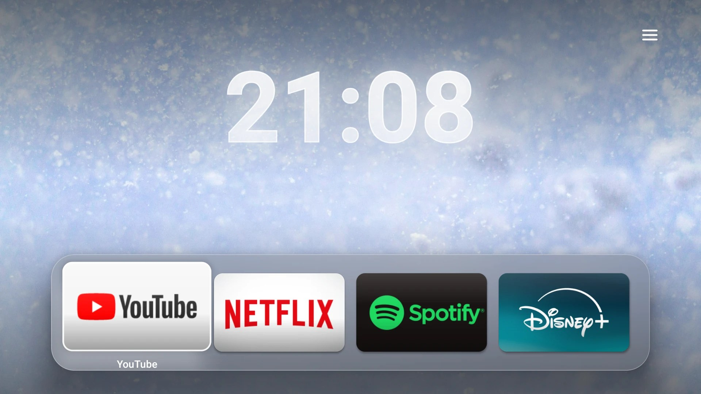
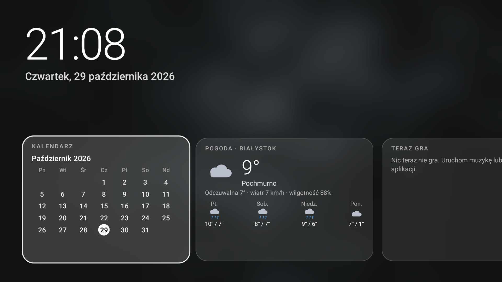
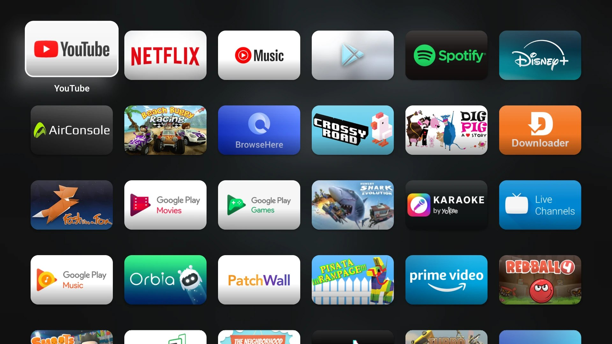
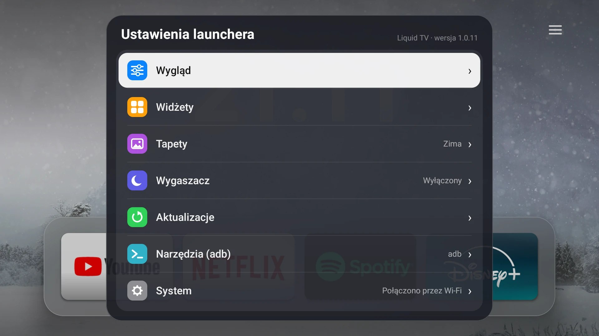
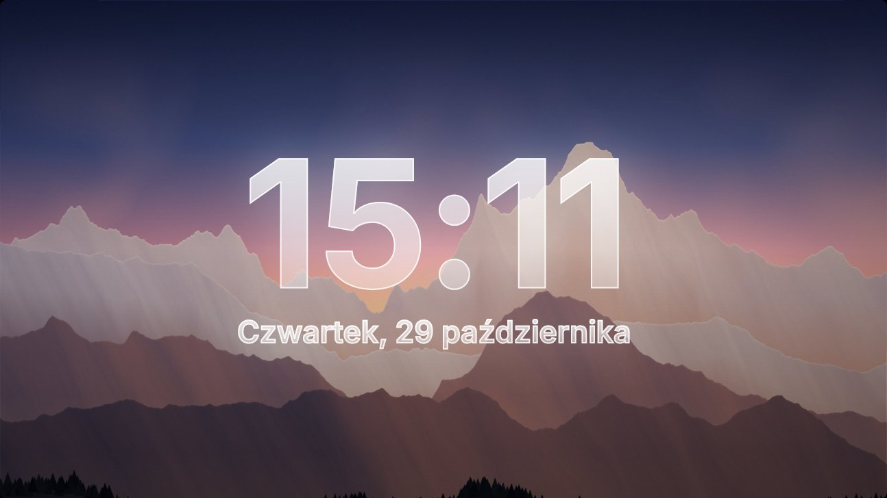

Android TV · Xiaomi Mi Box
Szklany dok, wielkie kafelki, widżety, własne tapety i wygaszacz. Aktualizuje się sam, a z telefonu możesz sterować Boxem, wysyłać zdjęcia i pokazać swój ekran na telewizorze.
Na Boxie wpisz w aplikacji Downloader adres vcbgf5.github.io/LiquidLauncherMibox/apk. Zawsze pobiera najnowszą wersję.





To prawdziwe zrzuty ekranu z Mi Box S. Klikalny podgląd w przeglądarce →
Pobieranie
Wszystko jest w jednym wydaniu na GitHubie. Pliki są podpisane tym samym kluczem, więc każda nowa wersja instaluje się na poprzedniej bez odinstalowywania.
Aplikacja na Boxa / Android TV. Po instalacji sama pilnuje aktualizacji (co 5 s sprawdza, czy jest nowa).
Pobierz LiquidTV.apkAplikacja na telefon: pilot, wpisywanie tekstu, zdjęcia jako tapety, udostępnianie ekranu, „Udostępnij” z galerii.
Pobierz LiquidTVPilot.apktv_adb.py: instalacja, uprawnienia, własne komendy adb, zrzut i podgląd ekranu na żywo. Potrzebny tylko Python 3.
Makieta wyglądu jako aplikacja na telewizory LG. Prawdziwy launcher działa tylko na Androidzie.
Paczka .ipk w ActionsFunkcje
Natywna aplikacja (Kotlin + Jetpack Compose), bez WebView. Płynna także na starszych urządzeniach dzięki trybowi wydajności.
Kafelki 5:3 z delikatnym światłem, pochylaniem i połyskiem, ruch tapety przy przesuwaniu, własne kolory akcentu.
Co 5 s sprawdza nową wersję i instaluje ją przez adb na samym Boxie, po czym sam się uruchamia.
Zasilanie, restart, zwolnienie pamięci, wyłączanie aplikacji, szybsze animacje, sterowanie telewizorem przez HDMI-CEC.
Nad każdą aplikacją, z poziomem albo kierunkiem (przy sterowaniu TV przez CEC). Systemowy pasek można schować.
Strona z kodem QR i aplikacja Pilot: sterowanie, wpisywanie, zdjęcia jako tapety, ekran telefonu na TV.
Kalendarz Google (link iCal), pogoda, „Teraz gra” ze sterowaniem, sieć, Bluetooth, pamięć.
Kategorie z Unsplash, własne zdjęcia z telefonu, wygaszacz z zegarem, automatyczne przyciemnianie jasnych tapet.
Foldery aplikacji, zmiana ikony jednej aplikacji, panel szybkich ustawień pod przyciskiem Menu.
Sam wykrywa przycinanie i wyłącza efekty, a launcher rysuje tylko to, co się zmienia.
Poradniki
Najprościej: Downloader na Boxie. Jeśli wolisz komputer, jest też adb. Cały proces to kilka minut.
vcbgf5.github.io/LiquidLauncherMibox/apk i wybierz Go.Najpierw włącz debugowanie (następny poradnik), potem:
adb connect 192.168.0.170:5555 adb install -r LiquidTV.apk
Albo uruchom skrypt tv_adb.py i wybierz „Zainstaluj / zaktualizuj Liquid TV” (pobierze najnowszą wersję sam).
Skopiuj plik APK na pendrive, włóż go do Boxa i otwórz plik w menedżerze plików (np. X-plore albo File Commander). Tak samo zezwól na instalację z nieznanych źródeł.
1. Pytanie systemu. Po instalacji naciśnij Home. Jeśli pojawi się wybór ekranu głównego, wskaż Liquid TV i Zawsze. Na części urządzeń to pytanie się nie pokazuje.
2. Przez launcher (adb). Po „Skonfiguruj adb” (poradnik niżej) wejdź w Ustawienia → Narzędzia (adb) → Wyłącz aplikację… i wyłącz fabryczny ekran główny. Pozycja jest oznaczona „ekran główny”; launcher ostrzeże, że Home otworzy wtedy Liquid TV. Cofniesz to w Przywróć wyłączone aplikacje….
3. Skrypt na komputerze. Pozycja „Ustaw Liquid TV jako domyślny ekran główny”.
4. Ręcznie przez adb:
adb shell pm list packages | grep -i launcher adb shell pm disable-user --user 0 com.google.android.tvlauncher
Pierwsza komenda pokazuje nazwę fabrycznego launchera (na Mi Box S zwykle com.google.android.tvlauncher, na modelach z Google TV com.google.android.apps.tv.launcherx). Cofnięcie:
adb shell pm enable com.google.android.tvlauncher
adb w samym launcherze
Liquid TV potrafi rozmawiać z adb działającym na tym samym Boxie (adres 127.0.0.1:5555), tak jak polecenia z komputera. Dzięki temu robi rzeczy, których zwykła aplikacja nie może: ciche aktualizacje, restart, uśpienie, wyłączanie aplikacji, nadawanie sobie uprawnień. Komputer nie jest potrzebny.
| Narzędzie | Co robi |
|---|---|
| Zwolnij pamięć | Zatrzymuje aplikacje w tle i czyści pamięć podręczną wszystkich aplikacji (am kill-all, pm trim-caches), pokazuje RAM przed i po. |
| Animacje systemu | Normalne / szybkie (0,5×) / wyłączone: system staje się szybszy w odczuciu. |
| Wyłącz aplikację… | Wyłącza wybraną aplikację dla użytkownika (pm disable-user), z potwierdzeniem. Aplikacje systemowe kluczowe dla działania Boxa są chronione. |
| Przywróć wyłączone aplikacje… | Lista wyłączonych (pm list packages -d) i włączenie z powrotem jednym kliknięciem. |
| Włącz telewizor (HDMI-CEC) | Wysyła „One Touch Play”; zależy od ustawień CEC telewizora. |
| Włącz lub wyłącz telewizor (CEC) | Klawisz „TV power”, który Android zamienia w komunikat CEC. |
| Pilot z telefonu (kod QR) | Włącza stronę sterowania z telefonu, patrz poradnik „Pilot z telefonu”. |
| Menu zasilania | Uśpij, Restart, Wyłącz Box (z potwierdzeniem) oraz okno zasilania Androida. |
| Menu aplikacji (przytrzymaj OK) | „Wymuś zatrzymanie”, „Wyłącz aplikację…”. |
Ustawienia → Aktualizacje → Diagnostyka adb… sprawdza po kolei: wersję Androida, czy jest klucz adb, czy porty (127.0.0.1:5555 i adres w sieci) są otwarte, wartość adb_enabled, a potem łączy się i wykonuje id, getprop, pm path. Wynik mówi, czy brakuje debugowania, zgody na ekranie TV, czy jest błąd.
| Komunikat | Znaczenie |
|---|---|
| Port … otwarty: nie | Debugowanie wyłączone albo adb nie nasłuchuje w sieci: włącz „Debugowanie USB”. |
| Czeka na zgodę na ekranie telewizora | Zaakceptuj pytanie z pilota (zaznacz „Zawsze zezwalaj”) i powtórz. |
| Połączenie i autoryzacja: działa | Wszystko gotowe, ciche aktualizacje będą działać. |
Z komputera
Jeden plik w Pythonie. Łączy się z Boxem przez sieć i ma menu najczęstszych czynności. Jeśli na komputerze nie ma programu adb, sam proponuje pobranie go od Google.
Dokumenty\liquidtv).cmd w pasku adresu Eksploratora) i uruchom:python tv_adb.py 192.168.0.170
Zamiast przykładowego adresu wpisz IP swojego Boxa. Przy pierwszym połączeniu zaakceptuj pytanie na TV. Skrypt pokaże menu; wpisz numer pozycji i Enter.
| # | Pozycja |
|---|---|
| 1 | Stan: wersja Liquid TV, usługa dostępności, domyślny launcher |
| 2 | Zainstaluj / zaktualizuj Liquid TV (pobiera najnowszą wersję z GitHuba) |
| 3 | Włącz usługę dostępności (pasek głośności, okno zasilania) |
| 4 | Ustaw Liquid TV jako domyślny ekran główny |
| 5 | Wpisz link do pobrania w zaznaczone pole na Boxie (np. w Downloaderze) |
| 6 | Otwórz Liquid TV na Boxie |
| 7 | Zrzut ekranu Boxa (zapisuje w Obrazach lub na Pulpicie) |
| 8 | Podgląd ekranu Boxa na żywo (scrcpy, a bez niego okno z odświeżaniem i sterowaniem klawiaturą) |
| 9, 10 | Uśpij / obudź Boxa |
| 11 | Podłącz kalendarz Google (link iCal) |
| 12 | Ustaw miasto pogody (dowolne) |
| 13 | Nadaj launcherowi uprawnienia (ustawienia, Bluetooth, kalendarz, tło) |
| 14 | Nadaj WSZYSTKIE uprawnienia (także niepotrzebne; każde zadeklarowane + appops + praca w tle + usługi, z raportem) |
| 15 | Własna komenda (dowolna komenda adb shell; zaczynając od adb zwykłe polecenie adb) |
| 16 | Diagnostyka głośności (usługa, audio, CEC, dziennik) |
| 17, 18, 19 | Wyłącz usługę dostępności / Odinstaluj Liquid TV / Zrestartuj Boxa |
Pozycja Własna komenda pyta o linię i wykonuje ją na Boxie, aż wpiszesz pustą. Przykłady:
pm list packages -d # wyłączone aplikacje dumpsys audio # stan dźwięku settings get global hdmi_control_enabled # czy CEC jest włączone input keyevent 24 # głośność w górę media volume --stream 3 --set 8 # głośność 8, bez paska am start -n com.liquidglass.tvlauncher/.MainActivity adb logcat -d -s LiquidTV # zwykłe polecenie adb (przedrostek „adb ”)
Bez menu, z poziomu skryptu:
python tv_adb.py 192.168.0.170 --status python tv_adb.py 192.168.0.170 --install --enable-service python tv_adb.py 192.168.0.170 --shell "dumpsys battery" python tv_adb.py 192.168.0.170 --grant-all python tv_adb.py 192.168.0.170 --live python tv_adb.py 192.168.0.170 --screenshot
Pozycja Podgląd ekranu Boxa NA ŻYWO (albo --live) otwiera obraz z Boxa na komputerze.
Telefon
Dwa sposoby: strona w przeglądarce (bez instalacji) albo aplikacja Liquid TV Pilot. Oba łączą się z Boxem przez Wi-Fi.
| Zakładka | Funkcje |
|---|---|
| Pilot | Strzałki, OK, Wstecz, Home, odtwórz/pauza, głośność, wyciszenie, uśpienie, włączenie TV, wpisywanie tekstu, otwieranie adresu na TV. |
| Zdjęcia | Wybierasz zdjęcia z telefonu: są zmniejszane i obracane do pionu, trafiają do kategorii „Moje zdjęcia” i od razu stają się tapetą. Przycisk „Usuń moje zdjęcia z Boksa”. |
| Ekran | Pokazuje ekran telefonu na telewizorze (obraz bez dźwięku, kilka klatek na sekundę). Na TV przycisk Wstecz kończy udostępnianie. |
| Box | Skanowanie kodu QR, adres i kod ręcznie, sprawdzenie połączenia. |
„Udostępnij” z innych aplikacji: w galerii wybierz zdjęcia → Udostępnij → Liquid TV Pilot: zostaną tapetami. W przeglądarce lub YouTube udostępnij link: otworzy się na TV. Zwykły tekst jest wpisywany w zaznaczone na TV pole.
Launcher odświeża kalendarz co 20 minut i pokazuje najbliższe dwa tygodnie, także wydarzenia cykliczne.
Miasto z listy: Ustawienia → Widżety. Dowolne inne: pole „Pogoda” na stronie z telefonu. Dane z Open-Meteo.
Pokazuje utwór, wykonawcę, okładkę i postęp z aplikacji muzycznych i wideo. OK = odtwórz/pauza, przytrzymanie OK = następny utwór. Wymaga dostępu do powiadomień, który nadaje „Skonfiguruj adb” (albo przycisk w Widżety).
Dźwięk i przyciski
media volume --stream 3 --set N bez --show), więc system nie rysuje swojego paska. Gdyby to nie działało, oddaje przyciski systemowi.Ustawienia → System → Diagnostyka głośności… pokazuje: czy usługa działa, ostatnie przyciski z pilota (z nazwą urządzenia), wykryte zmiany głośności, dokąd idzie dźwięk (HDMI, Bluetooth), czy poziom uznano za prawdziwy. Przycisk Okna systemowe i audio (adb) pokazuje, które okno Androida jest paskiem głośności. W skrypcie ta sama diagnostyka to pozycja 16.
adb shell input keyevent omija usługę dostępności, więc przy testach naciskaj prawdziwy przycisk na pilocie.Przycisk Menu na pilocie otwiera Szybkie ustawienia: Wi-Fi, Bluetooth, dźwięk, wygaszacz, tryb wydajności, zwolnienie pamięci, uśpienie, restart, telewizor (CEC), pilot z telefonu i tryb głośności. To samo otworzy się po przytrzymaniu zębatki w górnym pasku.
Jeśli Twój pilot nie ma Menu albo wysyła inny kod: Ustawienia → System → Przycisk szybkich ustawień, naciśnij wybrany przycisk, a launcher go zapamięta. Przy włączonej usłudze dostępności zadziała w każdej aplikacji.
Pomoc
Zainstalowana wersja jest podpisana innym kluczem (dotyczy v1.0.3 i starszych). Odinstaluj Liquid TV raz (Ustawienia → Aplikacje) i zainstaluj nowy plik. Kolejne wersje będą się aktualizować normalnie. Launcher sam wykrywa ten przypadek i pokazuje komunikat.
adb connect mówi „connection refused” albo „timed out”adb kill-server i ponów adb connect.Wejdź w Ustawienia → Aktualizacje → Diagnostyka adb… i sprawdź, który krok zawodzi (patrz poradnik „adb w samym launcherze”). Jeśli nic nie pomaga, wybierz „Aktualizuj teraz”: launcher użyje wtedy zwykłego instalatora Androida.
Upewnij się, że usługa dostępności jest włączona, a tryb to „tylko nasz”. Pierwsze naciśnięcie po aktualizacji może jeszcze pokazać systemowy pasek: launcher musi najpierw zobaczyć, że poziom Boxa jest prawdziwy. Jeśli głośnością steruje telewizor przez CEC, jego własnego paska (na ekranie TV) launcher nie zdejmie. Szczegóły w „Diagnostyka głośności”.
Nauczysz go w Ustawienia → System → Przycisk szybkich ustawień. W „Diagnostyce głośności” zobaczysz też listę ostatnich przycisków, które dotarły do Boxa; jeśli przycisku tam nie ma, pilot nie wysyła go do Boxa.
Włącz z powrotem fabryczny launcher (Przywróć wyłączone aplikacje… albo adb shell pm enable com.google.android.tvlauncher), potem odinstaluj Liquid TV w Ustawienia → Aplikacje (albo pozycja „Odinstaluj” w skrypcie).
„Skonfiguruj adb” daje launcherowi uprawnienia powłoki adb na tym jednym Boxie, więc włączaj to tylko w sieci domowej. Klucz adb jest generowany lokalnie i nie opuszcza Boxa. Strona sterowania z telefonu jest chroniona sekretnym kodem w adresie i działa tylko w sieci lokalnej. Launcher nie zbiera danych o Tobie; łączy się z GitHubem (aktualizacje, tapety), Open-Meteo (pogoda) i adresem iCal, który sam podasz. Kod jest otwarty: github.com/vcbgf5/LiquidLauncherMibox.
Launcher jest natywną aplikacją na Androida i na webOS nie wystartuje. Możesz za to zainstalować na telewizorze LG klikalną makietę wyglądu: włącz Developer Mode, pobierz paczkę .ipk z Actions i zainstaluj przez ares-install (pełna instrukcja w folderze webos).